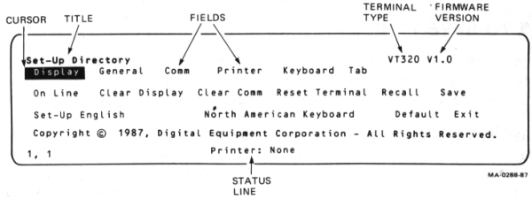

| Chapter 3 | Contents | Chapter 5 |
The VT320 has seven set-up screens that list the settings for the terminal's operating features.
You can display these screens and change settings from the keyboard. This chapter describes the set-up screens and how to change settings.
Most set-up features are initially set to a factory-default setting that works with most Digital systems. The VT320 has these factory-default settings permanently stored. If you change settings, you can use set-up to reset the terminal to the factory-default settings.
You can also select and save settings to match your host system. The VT320 saves your selections in nonvolatile memory, along with the factory-default settings. When you shut power off, you do not lose your saved settings.
You can change all set-up features from the keyboard. Your host system can also change some settings, as described in the VT320 Programmer Reference Manual. See Appendix B to order other VT320 manuals.
To enter or leave set-up, you press the Set-Up key (the third key from the left on the top row of the main keypad). When you enter set-up, any text on the screen disappears, and the Set-Up Directory appears. When you leave set-up, the text that was on the screen reappears.
The Set-Up Directory lists all the set-up screens. You can select any set-up screen from the Set-Up Directory. You can also move from screen to screen. You can return to the Set-Up Directory from any set-up screen. You can only display one set-up screen at a time.
The terminal displays set-up screens on the bottom third of the screen. Figure 4-1 shows the set-up screen format.
|  |
You use the arrow keys to move the set-up cursor to a particular feature on a set-up screen. Most features have two or more possible settings. You use the Enter key to change the setting of the feature highlighted by the cursor. Each time you press Enter, the setting changes. Depending on the feature, the change takes effect immediately or when you leave set-up.
Some features are action fields. When you move to an action field and press the Enter key, the terminal performs the action. For example, six of the set-up screens have an action field that reads To Directory. When you move to this feature and press Enter, the Set-Up Directory screen replaces the current screen.
Example
This example shows how to change the screen display from 80 to 132 columns.
When you change a feature setting, the VT320 uses that setting until you turn the terminal off or change the setting again. To save a new setting, read the next section.
You can save the feature settings you select. When you do, the VT320 automatically uses your settings each time you turn the terminal on. In this way, you can set the VT320 to your computing environment.
You use the Save feature to save your settings. After you change settings to match your host computer, return to the Set-Up Directory. Use the arrow keys to move the cursor to the Save feature, then press Enter. The VT320 saves all current set-up settings and displays a "Done" message on the status line. The terminal uses these settings until you or an application save a new set of settings.
If you temporarily change some settings without saving them, you can Recall your last set of saved settings from the Set-Up Directory.
The status line shows you the current position of the screen cursor, the printer status, and the modem status (if used). Table 4-1 describes the three status line fields, from left to right. The status line appears on line 25 at the bottom of the screen. If you display the status line outside of set-up, the line appears in reverse video.
By default, the status line only appears in set-up. You can use the Status Display feature in the Display Set-Up screen to control the status line. The feature has three settings.
| No Status Display (default) |
The status line appears only in set-up or when selected by the host system. |
| Indicator | The status line appears at all times. |
| Host-Writable | The host system can write messages in place of the status line. |
You can display the indicator status line in English, French, or German. Use the Set-Up Language feature in the Set-Up Directory screen to select the language.
| Field | Value | Meaning |
|---|---|---|
| * This field appears only when the VT320 has a modem connected. | ||
| 1 | Cursor position | |
| (l,c) | The cursor is currently at line l, column c. | |
| 2 | Printer status | |
| Ready | The printer is ready. | |
| Not Ready | The printer is not ready. | |
| None | No printer is connected. | |
| Auto | The terminal is in auto print mode. | |
| Controller | The terminal is in printer controller mode. See Chapter 6. | |
| 3 | Modem status* | |
| DSR | The modem is ready to send or receive data. | |
| No DSR | The modem is not ready to send or receive data. | |
Table 4-2 lists the features available on each set-up screen.
| Set-Up Directory | Display Set-Up | General Set-Up |
|---|---|---|
| Display Set-Up General Set-Up Communications Set-Up Printer Set-Up Keyboard Set-Up Tab Set-Up On-Line/Local Clear Display Clear Communications Reset Terminal Recall Saved Settings Save Settings Set-Up Language Keyboard Language Factory Defaults Exit Set-Up |
To Next Set-Up To Directory 80/132 Columns Display/Interpret Controls Auto Wrap Smooth/Jump Scroll Light/Dark Screen Cursor Cursor Style Status Display |
To Next Set-Up To Directory Terminal Mode Terminal ID UDK Lock User Features Lock Character Set Mode Keypad Mode Cursor Key Mode New Line User-Preferred Set |
| Communications Set-Up | Printer Set-Up | Keyboard Set-Up |
| To Next Set-Up To Directory Transmit Speed Receive Speed XOFF Data Bits/Parity Stop Bits Local Echo Host Port Selection Disconnect Transmit Rate Limit Auto Answerback Answerback = Concealed |
To Next Set-Up To Directory Transmit/Receive Speed Printer to Host Comm Print Mode XON/XOFF Data Bits/Parity Stop Bit Print Page Printed Data Type Print Terminator |
To Next Set-Up To Directory Typewriter/D.P. Keys Caps/Shift Lock Auto Repeat Keyclick Margin Bell Warning Bell Break Compose Key <x] DEL/BS ,, and .. Keys <> Key `~ Key |
| Tab Set-Up | ||
| To Next Set-Up To Directory Clear All Tabs Set 8 Column Tabs Tab Fields and Ruler |
This screen always appears when you enter set-up. You can select any set-up screen from the Set-Up Directory. You can also perform such functions as saving and recalling feature settings. Table 4-3 describes the Set-Up Directory features. All features, except On-Line/Local, are action fields.
| Feature | Settings* | Function |
|---|---|---|
| * Default settings are in bold type. | ||
| Display | Display | These fields display the selected set-up screen. For example, Display selects the Display Set-Up screen. |
| General | General | |
| Comm | Comm | |
| Printer | Printer | |
| Keyboard | Keyboard | |
| Tab | Tab | |
| On-Line/Local | Selects whether or not the VT320 can communicate with the host system. | |
| On-Line | Lets the VT320 communicate with the host system. | |
| Local | Puts the host system on hold. The VT320 sends keyboard data to the screen only. | |
| Clear Display | Clear Display | Clears the screen when you leave set-up. |
| Clear Comm | Clear Comm | Clears communication as follows. |
|
|
|
| Reset Terminal | Reset Terminal | Resets many VT320 operating features to a default setting used by most application programs. The screen, communication, character set modes, and user-defined keys are not affected. See Chapter 13 of the VT320 Programmer Reference Manual. |
| Recall | Recall | Sets all set-up features to their saved values. Clears the screen. |
NOTE: If you use a modem, Recall disconnects communication with the host system. |
||
| Save | Save | Saves all current feature settings in all set-up screens. |
| Set-Up=_____ | English Francais Deutsch |
Selects the language used to display set-up screens. |
| _____ Keyboard | Lets you select one of the following languages or dialects to match your keyboard. | |
| North American British Flemish Canadian (French) Danish Finnish German/Austrian Dutch Italian Swiss (French) Swiss (German) Swedish Norwegian French/Belgian Spanish Portuguese |
||
| Default | Default | Sets all set-up features to their factory-default settings. Clears the screen and returns the cursor to the upper-left corner. |
NOTE: If you use a modem, Default may disconnect communication with the host system. |
||
| Exit | Exit | Lets you leave set-up. |
This screen lets you select display features such as 80 or 132 columns, smooth or jump scrolling, and a block or underline cursor. Table 4-4 describes the Display Set-Up features.
| Feature | Settings* | Function |
|---|---|---|
| * Default settings are in bold type. | ||
| To Next Set-Up | To Next Set-Up | Displays the General Set-Up screen. |
| To Directory | To Directory | Displays the Set-Up Directory. |
| _____ Columns | 80 Columns | Selects an 80 or 132-column screen display for text. Takes effect in set-up and clears the screen. |
| 132 Columns | ||
| _____ Controls | Selects whether to execute or display codes from the host system. This feature is useful for debugging programs. | |
| Interpret Controls | Executes control codes, but does not display them. | |
| Display Controls | Displays control codes as characters, but does not execute them. | |
| Auto Wrap | Selects whether or not text automatically wraps to the next line when you reach the right margin. | |
| No Auto Wrap | When the cursor reaches the margin, the VT320 displays each new character in the last column of the line. Each new character overwrites the previous character. | |
| Auto Wrap | When the cursor reaches the margin, the VT320 displays new characters on the next line. | |
| _____ Scroll | Selects how fast lines appear on the screen. | |
| Smooth Scroll | Limits the speed at which new lines appear on the screen, producing a smooth, steady scroll. | |
| Jump Scroll | Displays new line as fast as they are received, producing a jump scroll. | |
| _____ Text, _____ Screen | Selects a normal or reverse video display. | |
| Light Text, Dark Screen | Selects a normal screen display (light text on dark background) | |
| Dark Text, Light Screen | Selects a reverse video display (dark text on light background). | |
| Text Cursor | Cursor | Selects whether or not to display the text cursor. |
| No Cursor | ||
| _____ Cursor Style | Block | Selects a blinking block or blinking underline cursor. |
| Underline | ||
| _____ Status Display | Selects how and when to display the status line at the bottom of the screen. | |
| No Status Display | The status line only appears when you are in set-up. | |
| Indicator | The status line appears at all times. | |
| Host Writable | Host applications can write messages in place of the status line. | |
This screen lets you select the terminal's general operating features, such as operating mode and multinational character sets. Table 4-5 describes the General Set-Up features. See Chapter 2 for more on character sets.
| Feature | Settings* | Function |
|---|---|---|
| * Default settings are in bold type. | ||
| † You can define the function of some top-row keys by using programming sequences. See Chapter 10 of the VT320 Programmer Reference Manual. | ||
| To Next Set-Up | To Next Set-Up | Displays the Communications Set-Up screen. |
| To Directory | To Directory | Displays the Set-Up Directory screen. |
| _____ Mode _____ | Selects the terminal's operating mode. Lets the VT320 work as a VT200 series, VT100 series, or VT52 terminal. | |
| VT300 Mode, 7-Bit Controls | Lets the terminal use all VT320 features. This mode supports 8-bit graphic display characters and 7-bit control characters. Select this mode for all VT200 applications. Digital recommends this mode for most applications. | |
| VT300 Mode, 8-Bit Controls | Lets the terminal use all VT320 features in an 8-bit environment with 8-bit control characters. Select this mode for all VT200 applications that use 8-bit control characters. This mode is the most efficient, but not yet supported by many applications. | |
| VT100 Mode | Lets the terminal run applications that require strict VT100 compatibility. In general, use VT300 Mode, 7-Bit Controls if possible. | |
| VT52 Mode | Lets the terminal run VT52 applications. | |
| Terminal ID | VT320 ID VT100 ID VT101 ID VT102 ID VT220 ID |
Selects the device attributes response (terminal ID). This response lets the host system know specific operating attributes of the terminal. |
NOTE: If you use the VMS operating system, version 4.6 or later can recognize VT320 terminals. If your operating system does not recognize your VT320, select the "VT220 ID" setting. |
||
| User Defined Keys _____ | Selects whether or not the host system can change user-defined key (UDK) definitions.† | |
| Unlocked | Allows the host to define UDKs. | |
| Locked | Prevents the host from defining UDKs. | |
| User Features _____ | Selects whether or not the host system can change your settings for the following features.
|
|
| Unlocked | Lets the host change user features. | |
| Locked | Prevents the host from changing features. | |
NOTE: Some applications expect to control the above user features. For these applications, set User Features _____ to "Unlocked". |
||
| Character Set Mode | Selects the type of character sets to use, 8-bit multinational sets or 7-bit national sets. | |
NOTE: If you set the Keyboard feature in the Set-Up Directory to "North American", you cannot select "7-Bit Characters". If you set the operating mode to "VT100", you cannot select "8-Bit Characters". |
||
| 8-Bit Characters | Supports the 8-bit DEC Multinational or ISO Latin-1 set. Both include the 7-bit ASCII set. You select the specific 8-bit set with the User-Preferred Character Set feature in this screen. | |
| 7-Bit Characters | Makes the VT320 use one of the 7-bit national replacement character sets (NRCs). You select the NRC set with the Keyboard feature in the Set-Up Directory screen. | |
| _____ Keypad | Selects whether the numeric keypad keys send the characters on their keycaps or programming functions. | |
| Numeric | The keypad keys send the characters on their keycaps (using ASCII character codes). | |
| Application | The keypad keys send programming functions defined by an application. | |
NOTE: If you set the Keypad feature above to "Numeric", the Enter key works like the Return key. |
||
| _____ Cursor Keys | Selects whether the arrow keys control cursor movement or send application control functions. | |
| Normal | The arrow keys move the cursor up, down, left, right (using ANSI cursor control sequences). | |
| Application | The arrow keys send application control functions. | |
| _____ New Line | Selects whether or not the Return key moves the cursor to a new line. | |
| No New Line | The Return key sends a carriage return only. | |
| New Line | The Return key sends a carriage return and a line feed. | |
NOTE: When you set the Keypad feature to "Numeric", the New Line feature affects the Enter key the same as it does the Return key. |
||
| User-Preferred Character Set | When Character Set Mode is set to "8-Bit Characters", selects the DEC Multinational set or ISO Latin-1 set for use. The difference between the two sets is their supplemental character set, called a user-preferred set. | |
| UPSS DEC Supplemental | Selects the DEC Multinational character set. This set is compatible with Digital applications. | |
| UPSS ISO Latin-1 | Selects the International Standards Organization (ISO) character set. | |
This screen lets you select features that affect how the VT320 communicates with your host system. The default settings work with most of Digital's computer systems. Table 4-6 describes the Communications Set-Up features.
| Feature | Settings* | Function | ||
|---|---|---|---|---|
| * Default settings are in bold type. | ||||
| † Does not apply to the printer port. See the Printer Set-Up screen. | ||||
| To Next Set-Up | To Next Set-Up | Displays the Printer Set-Up screen. | ||
| To Directory | To Directory | Displays the Set-Up Directory screen. | ||
| Transmit= _____† | Selects the baud rate the VT320 uses to send data to the host system. | |||
| 75 110 150 300 600 1200 2400 4800 9600 19200 |
The terminal's transmit speed must match the host's receive speed. However, the VT320 can transmit at one speed and receive at another. | |||
| Receive= _____† | Receive=Transmit 75 110 150 300 600 1200 2400 4800 9600 19200 |
Selects the baud rate the VT320 uses to receive data from the host system. The terminal's receive speed must match the host's transmit speed. However, the VT320 can transmit at one speed and receive at another. |
||
| XOFF _____† | XOFF at 64 XOFF at 128 No XOFF |
Selects how many characters the VT320 can receive before sending the host system an XOFF signal to stop sending data. For example, "XOFF at 64" means the VT320 sends XOFF to the host when the input buffer contains 64 characters. See Appendix C. |
||
| ___ Bits, ___ Parity† |
|
|||
| ___ Stop Bit† | Selects the number of stop bits (1 or 2) used in the character format. | |||
| 1 Stop Bit | Digital recommends using 1 stop bit for most applications. | |||
| 2 Stop Bits | Use this setting for baud rates under 300. | |||
| Local Echo | Selects whether or not to send the characters you type directly to the screen. | |||
| No Local Echo | Sends keyboard data to the host. The host may or may not send the data back to the screen. | |||
| Local Echo | Sends keyboard data to the screen and to the host. | |||
| Host Port Selection | Selects which cable connector you can use on the rear of the VT320 to connect to the host system. | |||
| RS232, Data Leads Only | Selects the 25-pin RS232 connector. Use this setting if you do not have a modem. | |||
| RS232, Modem Control | Selects the 25-pin RS232 connector. Use this setting if you have a modem requiring EIA modem control. | |||
| DEC-423, Data Leads Only | Selects the 6-pin DEC-423 connector. Use this setting if you do not have a modem. | |||
| DEC-423, Modem Control | Selects the 6-pin DEC-423 connector. Use this setting if you have a modem. | |||
NOTE: The next feature only works when you use the "RS232, Modem Control" setting above. |
||||
| Disconnect, ___ Delay | When modem control is in effect, selects the time delay the VT320 uses before disconnecting from the communication line. A disconnect occurs when the VT320 no longer detects the received line signal detection (RLSD) signal. | |||
| Disconnect, 2 s Delay | This setting is for all countries except the United Kingdom. | |||
| Disconnect, 60 ms Delay | This setting is used in the United Kingdom. | |||
| ______ Transmit | Selects a limited or unlimited terminal transmit speed. | |||
| Limited | Limits the terminal to sending 150 to 180 characters per second, regardless of the baud rate selected by the Transmit feature. This reduces the interrupt burden on the operating system. | |||
| Unlimited | Selects an unlimited terminal transmit speed. | |||
| Auto Answerback | Auto Answerback No Auto Answerback |
Selects whether or not to send the answerback message to the host system after a communication line connection. | ||
| Answerback = | Lets you type an answerback message of up to 30 characters. When you select this feature, the VT320 displays the prompt "Enter Answerback =" on the status line. You can conceal your message with the Conceal feature in this screen. |
|||
NOTE: The VT320 sends this message to the host system when (1) you type Ctrl-Break, or (2) the host requests the message by sending an ENQ character. Host requests do not affect screen data or require a user response. |
||||
| Concealed | Selects whether or not the VT320 can display the answerback message in set-up. | |||
| Not Concealed | The VT320 can display the answerback message in set-up. | |||
| Concealed | The VT320 cannot display your answerback message. You cannot reset this feature to "Not Concealed", except by entering a new answerback message. | |||
This screen lets you set up the VT320 to work with different types of printers. Table 4-7 describes the Printer Set-Up features.
| Feature | Settings* | Function |
|---|---|---|
| * Default settings are in bold type. | ||
| To Next Set-Up | To Next Set-Up | Displays the Keyboard Set-Up screen. |
| To Directory | To Directory | Displays the Set-Up Directory. |
| Speed= ____ | 75 110 150 300 600 1200 2400 4800 9600 19200 |
Selects the baud rate the VT320 uses to send data to a printer. |
| Printer to Host Comm | Selects whether or not the printer can send data to the host system. | |
| No Printer to Host | Data can only move from host to printer. | |
| Printer to Host | Data can move from host to printer, and from printer to host. | |
NOTE: XON/XOFF flow control operates independently between the terminal and printer, and between the printer and host. |
||
| Print Mode | Determines when and how printing takes place. | |
| Normal | Lets you start print functions from the keyboard. | |
| Auto Print | Prints the current line of text when the VT320 receives a line feed, form feed, or vertical tab from the host. | |
| Controller | Lets the host send data directly to the printer, without displaying the data on the screen. | |
| XOFF | Selects whether or not to use XON/XOFF flow control with the printer. See Appendix C. | |
| XOFF No XOFF |
||
| ___ Bits, ___ Parity | Selects a character format to match the printer's. | |
| 8 Bits, No Parity 8 Bits, Even Parity 8 Bits, Odd Parity 7 Bits, No Parity 7 Bits, Mark Parity 7 Bits, Space Parity 7 Bits, Even Parity 7 Bits, Odd Parity |
||
| ___ Stop Bit | 1 Stop Bit 2 Stop Bits |
Selects the number of stop bits that match the printer's character format. |
| Print _______ | Selects how much of the screen to print when you press the Print Screen key. | |
| Full Page | Prints the full screen. | |
| Scroll Region | Prints only the scrolling region. | |
| Printed Data Type | Lets you select the VT320 character sets that match the Digital printer's character sets. | |
| National Only | Use with a printer that supports the ASCII set (in "8-Bit" multinational mode) or the current national set (in "7-Bit" national mode). Examples: LA34, LA36, and LA120 printers. | |
| National and Line Drawing | Use with a printer that supports the VT100 line drawing set and (1) the ASCII set (in "8-Bit" multinational mode), or (2) the current national set (in "7-Bit" national mode). Example: LA100. | |
| Print All Characters | Use with a printer that supports the multinational and line drawing sets. Example: LA50. | |
| Print Terminator | No Terminator Terminator = FF |
Selects whether or not the VT320 sends a form feed (FF) at the end of a print operation. |
This screen lets you control the function of several keys: Lock, Break, Compose, <x], . (period), , (comma), < >, and ~. You can also control the keyboard's margin bell, warning bell, and keyclick.
The "_____ Keys" feature lets you select between standard typewriter characters and data processing characters. This feature affects keys with characters on the right half of their keycaps. Data processing characters allow European model keyboards to use characters that appear as standard typewriter characters on the North American/United Kingdom keyboard.
Table 4-8 describes the Keyboard Set-Up features.
| Feature | Settings* | Function |
|---|---|---|
| * Default settings are in bold type. | ||
| † The following keys never repeat: Hold Screen, Print Screen, Set-Up, Return, Break, Lock, and Ctrl. | ||
| ‡ This feature applies only to the North American/United Kingdom and Dutch keyboards. | ||
| To Next Set-Up | To Next Set-Up | Displays the Tab Set-Up screen. |
| To Directory | To Directory | Displays the Set-Up Directory. |
| ______ Keys | Selects the characters sent by keys that have three or more characters on their keycap. | |
| Typewriter | Selects the characters on the left half of the keycaps. | |
| Data Processing | Selects the characters on the right half of the keycaps. | |
NOTE: When you select "Data Processing" keys, the keyboard can only send ASCII characters. For keys with three or more characters, you cannot use the characters on the left half of the keycap. |
||
| ______ Lock | Selects the function of the Lock key (Chapter 3). | |
| Caps Lock | After you press Lock down, the alphabetic keys send their uppercase character. Other keys still send the bottom character on their keycap. | |
| Shift Lock | After you press Lock down, all keys send the top character on their keycap. | |
| Auto Repeat | Auto Repeat No Auto Repeat |
Selects whether or not a key sends its character repeatedly when you hold the key down.† |
| Keyclick | Keyclick No Keyclick |
Selects whether or not keys make a sound when you press them. |
| Margin Bell | Margin Bell No Margin Bell |
Selects whether or not the VT320 makes a bell tone when the text cursor approaches the right margin. |
| Warning Bell | Warning Bell No Warning Bell |
Selects whether or not the VT320 makes a bell tone when (1) operating errors occur, or (2) you press Ctrl-G. |
| Break | Break No Break |
Selects whether or not the Break key sends a break signal (Chapter 3). You can end communication with a modem by pressing Shift-Break, regardless of the Break setting. |
| Compose | Compose No Compose |
Selects whether or not the Compose Character key works (Chapter 5). |
| Backarrow Key | Selects whether the <x] key sends a delete (DEL) character or a backspace (BS) character. | |
| <x] Delete | Pressing <x] sends a DEL character. | |
| <x] Backspace | Pressing <x] sends a BS character. | |
| ,, and .. Keys | Selects which characters the comma and period keys send. | |
| ,, and .. Keys | The comma key sends a comma when shifted or unshifted. The period key sends a period when shifted or unshifted. | |
| ,, and .. Keys Send ,< and .> | The comma key sends a comma when unshifted and a < character when shifted. The period key sends a period when unshifted and a > character when shifted. | |
| <> Key‡ | Selects which characters the angle bracket key sends. | |
| <> Key | The angle bracket key sends a < when unshifted and a > when shifted. | |
| <> Key Sends `~ | The angle bracket key sends a ` when unshifted and a ~ when shifted. | |
| `~ Key‡ | Selects which character the tilde key sends. | |
| `~ Key | The tilde key sends a ` when unshifted and a ~ when shifted. | |
| `~ Key Sends ESC | The tilde key sends an escape (ESC) character. | |
This screen lets you set the number of tab stops on a line. When you press the Tab key outside of set-up, the cursor advances to the next tab stop on the line. Table 4-9 describes the Tab Set-Up features.
There is one tab stop field for each column on the screen. You can use a screen display that is 80 or 132 columns wide. See the Columns feature in the Display Set-Up screen.
You can use the arrow keys or Tab key to move the set-up cursor to any tab stop field. Press the Enter key to place a T in a blank field or erase a T from that field. This screen shows the default tab stop settings.
| Feature | Settings* | Function |
|---|---|---|
| To Next Set-Up | To Next Set-Up | Displays the Display Set-Up screen. |
| To Directory | To Directory | Displays the Set-Up Directory. |
| Clear All Tabs | Clear All Tabs | Clears all tabs previously set. |
| Set 8 Column Tabs | Set 8 Column Tabs | Automatically sets tabs every 8 columns, starting with column 9. |